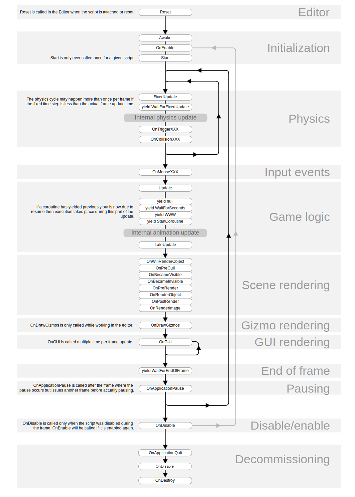

Execution Order of Event Functions
In Unity scripting, there are a number of event functions that get executed in a predetermined order as a script executes. This execution order is described below:
First Scene Load
These functions get called when a scene starts (once for each object in the scene).
- Awake: This function is always called before any Start functions and also just after a prefab is instantiated. (If a GameObject is inactive during start up Awake is not called until it is made active.)
- OnEnable: (only called if the Object is active): This function is called just after the object is enabled. This happens when a MonoBehaviour instance is created, such as when a level is loaded or a GameObject with the script component is instantiated.
- OnLevelWasLoaded: This function is executed to inform the game that a new level has been loaded.
Note that for objects added to the scene, the Awake and OnEnable functions for all scripts will be called before Start, Update, etc are called for any of them. Naturally, this cannot be enforced when an object is instantiated during gameplay.
Editor
- Reset: Reset is called to initialize the script's properties when it is first attached to the object and also when the Reset command is used.
Before the first frame update
- Start: Start is called before the first frame update only if the script instance is enabled.
For objects added to the scene, the Start function will be called on all scripts before Update, etc are called for any of them. Naturally, this cannot be enforced when an object is instantiated during gameplay.
In between frames
- OnApplicationPause: This is called at the end of the frame where the pause is detected, effectively between the normal frame updates. One extra frame will be issued after OnApplicationPause is called to allow the game to show graphics that indicate the paused state.
Update Order
When you're keeping track of game logic and interactions, animations, camera positions, etc., there are a few different events you can use. The common pattern is to perform most tasks inside the Update function, but there are also other functions you can use.
FixedUpdate: FixedUpdate is often called more frequently than Update. It can be called multiple times per frame, if the frame rate is low and it may not be called between frames at all if the frame rate is high. All physics calculations and updates occur immediately after FixedUpdate. When applying movement calculations inside FixedUpdate, you do not need to multiply your values by Time.deltaTime. This is because FixedUpdate is called on a reliable timer, independent of the frame rate.
Update: Update is called once per frame. It is the main workhorse function for frame updates.
LateUpdate: LateUpdate is called once per frame, after Update has finished. Any calculations that are performed in Update will have completed when LateUpdate begins. A common use for LateUpdate would be a following third-person camera. If you make your character move and turn inside Update, you can perform all camera movement and rotation calculations in LateUpdate. This will ensure that the character has moved completely before the camera tracks its position.
Rendering
- OnPreCull: Called before the camera culls the scene. Culling determines which objects are visible to the camera. OnPreCull is called just before culling takes place.
- OnBecameVisible/OnBecameInvisible: Called when an object becomes visible/invisible to any camera.
- OnWillRenderObject: Called once for each camera if the object is visible.
- OnPreRender: Called before the camera starts rendering the scene.
- OnRenderObject: Called after all regular scene rendering is done. You can use GL class or Graphics.DrawMeshNow to draw custom geometry at this point.
- OnPostRender: Called after a camera finishes rendering the scene.
- OnRenderImage: Called after scene rendering is complete to allow post-processing of the image, see Post-processing Effects.
- OnGUI: Called multiple times per frame in response to GUI events. The Layout and Repaint events are processed first, followed by a Layout and keyboard/mouse event for each input event.
- OnDrawGizmos Used for drawing Gizmos in the scene view for visualisation purposes.
Coroutines
Normal coroutine updates are run after the Update function returns. A coroutine is a function that can suspend its execution (yield) until the given YieldInstruction finishes. Different uses of Coroutines:
- yield The coroutine will continue after all Update functions have been called on the next frame.
- yield WaitForSeconds Continue after a specified time delay, after all Update functions have been called for the frame
- yield WaitForFixedUpdate Continue after all FixedUpdate has been called on all scripts
- yield WWW Continue after a WWW download has completed.
- yield StartCoroutine Chains the coroutine, and will wait for the MyFunc coroutine to complete first.
When the Object is Destroyed
- OnDestroy: This function is called after all frame updates for the last frame of the object's existence (the object might be destroyed in response to Object.Destroy or at the closure of a scene).
When Quitting
These functions get called on all the active objects in your scene:
- OnApplicationQuit: This function is called on all game objects before the application is quit. In the editor it is called when the user stops playmode.
- OnDisable: This function is called when the behaviour becomes disabled or inactive.
Script Lifecycle Flowchart
The following diagram summarises the ordering and repetition of event functions during a script's lifetime.

Note: Some browsers do not support SVG image files. If the image above does not display properly (for example, if you cannot see any text), please try another browser, such as Google Chrome or Mozilla Firefox.